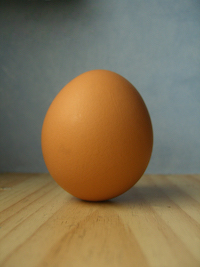

CloudCannon makes it easy for website designers and developers to allow clients and non-technical team members to edit static websites.
This tutorial site will teach you the basics of CloudCannon.
You will finish this tutorial with a live, editable static website and the skills to make an existing static website editable on your own.
You will learn how to:
- edit site content in CloudCannon (like your clients will)
- define editable site content in your source files; and
- set up hosting on CloudCannon.
You already know how to upload files to a new site in CloudCannon ;)
Let's get started.
1. Editing
Editing is the core use of CloudCannon.
I am editable text.
Right now you are in CloudCannon’s Visual Editor view (pencil icon selected at upper right). This is the view your clients will eventually make edits in.
A yellow box around content tells users that they can edit it.
The simplest edits to make are text:
Click me and type to change what I say.
Images are also easy to change.
The image to the right is editable.
In the Visual Editor you can zoom & crop an image or replace it.
Note: Changes cannot be made to an image's size or position in the Visual Editor. This is so non-technical users can't break your site design.
Let's practice zooming and cropping.
- Click on the cloud image to bring up the image edit menu.
- Select “Alter cloud_400x240.jpg”. This will bring up the zoom and crop interface.
- Drag on the lower right hand corner of the image to zoom.
- Drag the image from any other point to reposition it within the original image dimensions.
- Confirm the crop by clicking the tick button.
Nice. You’ve just altered an image.
Now let's replace the image with a new one. You can replace an image by:
- uploading a new image
- choosing a new image from those already uploaded, or
- importing a new image from a URL.
Let’s replace that image of a cloud with a cannon.
- Select ‘Use an image from {YOUR SITE NAME}’ from the image edit menu.
- Find the image called “cannon_400x240.jpg” and select it.
- The image dimensions are the same so you can confirm the replacement without cropping.
Let's replace that image again, this time with an image of a cloud AND a cannon.
- Copy this URL: http://upload.wikimedia.org/wikipedia/commons/0/0f/Cloud2_(5966977597).jpg
- Go into the image edit menu and select “Use an image from another website.”
- Paste the URL into the field.
- This image is a slightly different shape so you’ll need to position it for cropping and confirm it.
You can set lots of other elements to be editable like headers, spans, lists and divs. It is even possible to setup repeatable regions but for now we've covered the the basics.
2. Adding Editing
The text below wants to be editable. But it’s not currently. It’s missing that yellow border. And that’s because it’s missing class="editable".
I want to be editable text!
Switch to the Code Editor view (brackets icon at upper right) and follow the comments in the HTML at line 81. These will tell you how to add class="editable" to the text above.
If you added class="editable" correctly you should now be able to edit the text and the image..
Change the text now to something new.
Change the image too. I suggest you use this for your new one: http://upload.wikimedia.org/wikipedia/commons/2/27/Chicken_free_range_1.jpg
You don’t have to use our Code Editor to make changes to your files. You can make changes locally in your favourite text editor and sync them to CloudCannon using GitHub, Dropbox or FTP.
3. Saving
Did you notice that you switched between the Visual Editor and the Code Editor without having to save changes? Pretty cool huh.
To keep changes made in the editors you do have to save before you leave though.
Saving is as simple as clicking the Disk icon at upper right. That saves your changes permanently to the source files and triggers the upload to the hosted site.
4. Hosting
Right now this site is hosted by CloudCannon and viewable on the internet. That was so easy you maybe you didn’t realise you’d done it already?
Every site on CloudCannon gets a free testing domain and hosting.
You can find the URL for this website in the header next to the site name at upper left.
Visit this site now by clicking on the URL, set a password if you need to, and then come back down here on the live site in the new tab.
Sites on our free plan have a compulsory password. You'll need to set a password to view them.
5. Put it in action
Welcome back.
Looks familiar right?
But you can’t click on any of your editables?
Keep the tab with the live site open and come back into the Visual Editor in CloudCannon.
Make an edit to an editable element.
Save it.
Wait for the blue wheel to turn green at top left.
Refresh your live site tab.
Look for the change...
Boom. CloudCannon magic.
6. Go free little bird
That’s the end of the CloudCannon tutorial.
You’ve got the skills now to add simple editing to static websites of your own.
Congratulations.
The only major things we haven’t covered are sharing sites with clients/non-technical users and adding custom domains. These are easy to do from the 'Website Settings' menu at left (cog icon). They are both features of CloudCannon’s paid plans.
Our documentation also covers some more serious developer tasks you might like to tackle like setting up redirects, includes and forms.
If you were looking to build a blog or a more complex site check out our Jekyll beta information.
Feel free to delete this site now (it’s in the 'Webite Settings' menu) and upload your own fresh new site.
Finally, remember you can always always contact support@cloudcannon.com if you need a helping hand. We’d love to talk.
Cheers,
Mike, George, Sam, Tim & Ross
The CloudCannon team